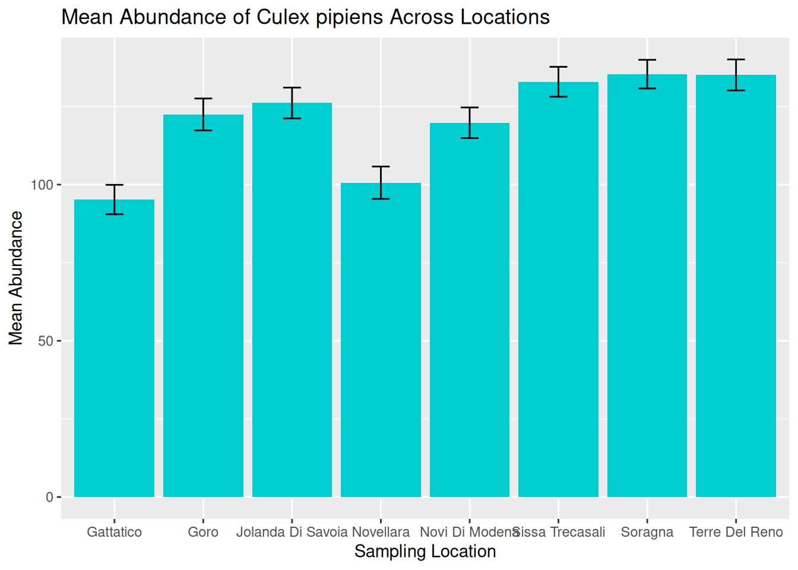
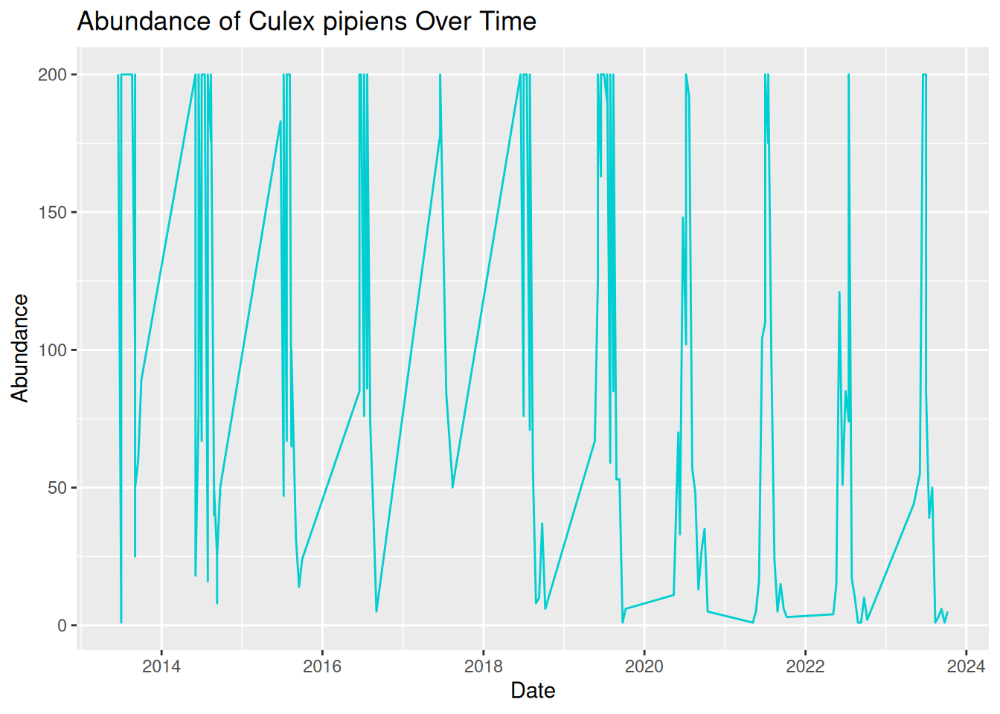
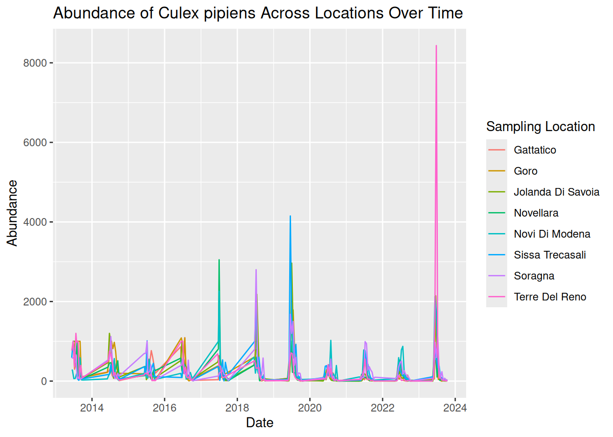
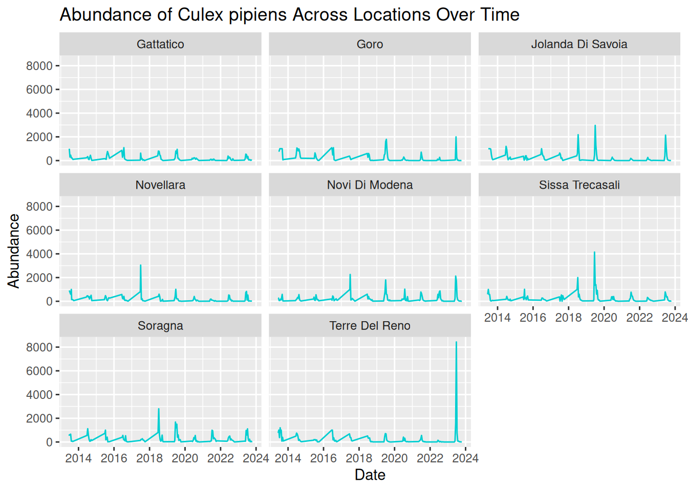
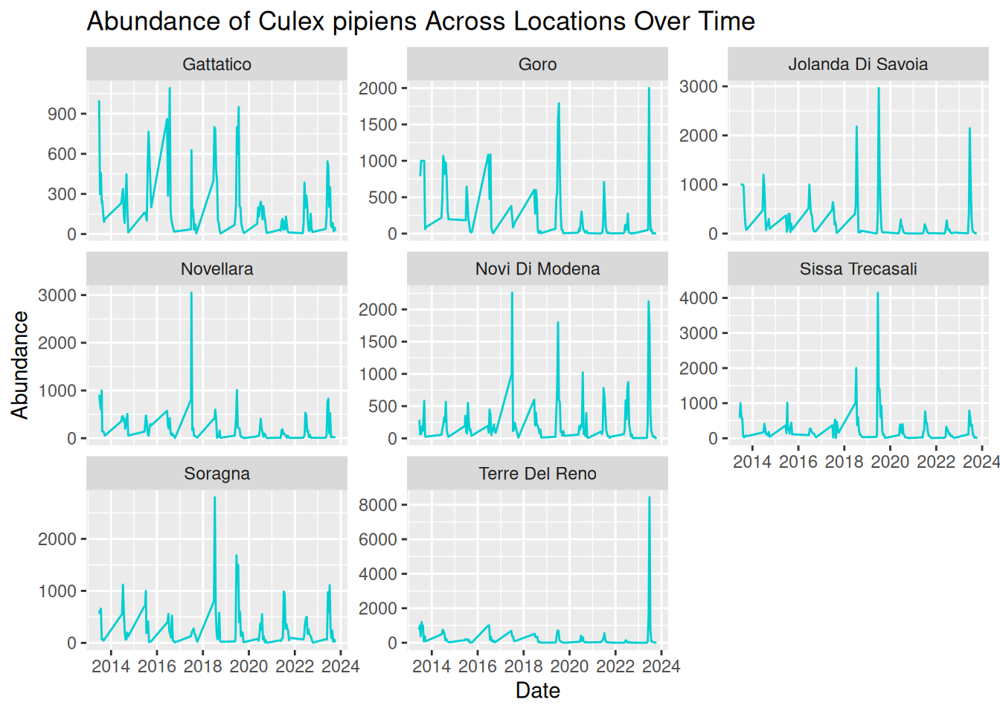

6 Visualising VBD Data in R
6.1 Overview
Visualisations are a key part of working with VBD data. They allow us to explore patterns, identify anomalies, and communicate findings clearly across different audiences.
In this workshop, you will use Hub curated datasets to build visualisations in R using ggplot2. The session focuses on abundance plots, a common and important tool in vector surveillance. We will start with simple summaries across locations, then build up to time-series plots comparing multiple locations, using colour and faceting to improve clarity. We will then discuss how visualisations can be used to generate testable hypotheses.
6.1.1 Learning Objectives
By the end of this workshop, you should be able to:
- Summarise VBD data in R to prepare it for plotting.
- Build abundance plots across locations and over time using
ggplot2. - Use colour and faceting to compare patterns across multiple groups.
- Identify what visualisations can tell us about VBD data.
- Formulate testable hypotheses from visualisations, taking alternative explanations into account.
- Identify and fix common problems in visualisations.
6.2 What can Visualisations Tell Us About Data?
Effective visualisations can help us to communicate complex datasets by quickly identifying distributions and patterns in the data that can be unclear from dataframes alone.
Visualising data can help us to identify:
- Distribution of data - how values are spread across a dataset, including the spatial distribution of vectors or pathogens.
- Correlative relationships - potential associations between multiple variables, such as vector populations and environmental factors.
- Temporal trends - variable changes over time, for example, vector abundance over time.
- Inter-group comparisons - differences between groups, for instance, vector species across regions.
- Outliers or anomalies - unexpected observations that may suggest errors to be addressed before modelling.
Given how much information we can extract from them, visualisations are often the first step in exploratory data analysis before further statistical modelling.
6.3 Abundance Plots
Different types of data need different types of visualisations. Choosing the appropriate plot to best represent your data is important to communicate your data and the proposed patterns clearly and accurately.
In VBD research, common visualisations you might come across include:
- Scatter plots - useful to explore relationships between variables.
- Box plots - useful to compare distributions between groups.
- Line plots - useful to visualise trends over time.
- Bar plots - useful to compare values between groups.
- Maps - useful to show spatial patterns.
In vector surveillance research, one of the most useful and frequently used visualisations is abundance plots. These can be used to show how vector counts change over time or across locations.
In VBD research, we typically want to understand how abundance patterns vary across time, space, and species. Common VBD research questions consider:
- Does vector abundance change throughout the year?
- Do certain locations consistently report higher vector counts?
- Do different species show distinct seasonal patterns?
In this session, we will use the ggplot2 package to create abundance plots. ggplot2 is one of the most commonly used packages for visualisations and graphics, so it is useful for you to understand how to code with this package. It is particularly good to build plots step-by-step by defining:
- The dataset we want to use.
- The variables we want to visualise.
- The type of plot we want to generate.
6.3.1 Abundance Across Locations
Vector populations often vary between locations. Differences in habitat, climate, host availability, and land use can all influence vector abundance. As a result, combining data from multiple sampling sites into a single trend may obscure important spatial patterns.
Let’s start by opening mosquito_subset_wrangled.csv in RStudio and loading the required packages:
library("tidyverse")
mosquito_data <- read_csv("data/mosquito_subset_wrangled.csv")Note: tidyverse is an all-encompassing package that contains a bunch of extra packages.
Here we will mostly be using functions from the ggplot2 and lubridate packages, but we can just load them all using tidyverse.
As our data involves multiple samples at the same site, we next want to summarise the abundance data for each location. We do this by grouping by location using the group_by() function, then summarising the abundance per location as the mean and standard error using the summarise() function:
abundance_per_location <- mosquito_data %>%
group_by(sample_location) %>%
summarise(
mean_abundance = mean(sample_value, na.rm = TRUE),
se_abundance = sd(sample_value, na.rm = TRUE) / sqrt(sum(!is.na(sample_value)))
)Here:
- group_by(sample_location) groups the rows by location, so calculations are done for each location.
- summarise() reduces each group to a single row.
- mean(sample_value, na.rm = TRUE) calculates the mean, ignoring any missing values.
- sd() / sqrt() converts the standard deviation into standard error, which we can later visualise using error bars.
We can use ggplot2 to visualise the abundance of mosquitos at multiple sampling locations by using ggplot() to define the data and aesthetics, and adding layers with +. We start by stating our dataset and which variables we want on the x- and y-axes:
aes() stands for aesthetics, and we use it to map variables in our dataset to visual properties of the plot. Here, we are mapping the sample location and mean abundance to the x- and y- axes.
In the next layers, we can use geom_col() and geom_errorbar() to tell R that we want to plot bars with whiskers (vertical error lines):
geom_col(fill = "darkturquoise") +
geom_errorbar(aes(
ymin = mean_abundance - se_abundance,
ymax = mean_abundance + se_abundance
),
width = 0.2) +This code is starting to look heavy, but it is just building aesthetics.
In geom_col(), we can use fill to set the colour of the bars.
In geom_errorbar(), we can use aes() to set the aesthetics. In this case:
- We use
yminto set the lower end of the whisker, calculated as the mean minus the standard error of abundance. - We use
ymaxto set the upper end of the whisker, calculated as the mean plus the standard error of abundance. -
widthcontrols how wide the horizontal lines are at either end of the whisker.
The final chunk of code is adding labels using labs():
labs(
title = "Mean Abundance of Culex pipiens Across Locations",
x = "Sampling Location",
y = "Mean Abundance"
)labs() is used to add titles and axis labels, helping to make the visualisation clear and interpretable.
If we piece those chunks of code together, we can generate our visualisation. Each line of this code builds on the previous one by adding a new layer to the plot.
abundance_plot_across_locations <- ggplot(abundance_per_location,
aes(x = sample_location, y = mean_abundance)) +
geom_col(fill = "darkturquoise") +
geom_errorbar(aes(
ymin = mean_abundance - se_abundance,
ymax = mean_abundance + se_abundance
),
width = 0.2) +
labs(
title = "Mean Abundance of Culex pipiens Across Locations",
x = "Sampling Location",
y = "Mean Abundance"
)
abundance_plot_across_locations
We can now use this visualisation to compare abundance patterns across sampling sites:
- Mean abundance varies across locations, with Sorragna and Terre Del Reno showing the highest mean mosquito abundance, and Gattatico showing the lowest mean mosquito abundance.
- There is a lot of variation within each location. This is consistent across the dataset, suggesting natural variation in the data to be explored further.
Visualisations such as this can help researchers identify potential hotspots of vector activity and guide further investigation into the ecological factors driving these patterns. For our graphic, we can see a lot of variation within each location. One way to assess this in more detail is to consider abundance over time.
6.3.2 Abundance Over Time: Time-Series
A time-series plot shows observations across a continuous timeline, allowing us to see how abundance changes over time. These visualisations can help us identify:
- Seasonal trends in abundance.
- Periods of rapid population growth or decline.
- Potential sampling gaps or inconsistencies.
Understanding these patterns is particularly important in VBD research because vector populations are often strongly influenced by seasonal changes in environmental conditions, including temperature, rainfall, and host availability.
6.3.2.1 Processing Dates
When working with time-series data, it is useful to understand how R stores and processes dates. In a dataset, dates are typically stored as characters (plain text format). Although an entry like "2023-06-15" might look like a date to us, R does not automatically recognise this as a date and will treat it as a character string.
When we generate a plot, ggplot2 will respond to how a variable is stored. For example, variables in character format will be plotted as categorical, whereas variables in date format will be plotted along a continuous time axis.
In time-series visualisations, a continuous time axis ensures:
- Observations are plotted in chronological order.
- Spaces between data points reflect true time differences.
- Trends over time can be interpreted accurately.
We are now going to visualise abundance as a true time-series by using the sampling date to show how abundance changes over continuous time for a single species.
6.3.2.2 Plotting Abundance Over Time
Later in this session, we will consider abundance over multiple locations, but for now, let’s filter the data to visualise abundance over time at a single location - Goro:
The pipe operator %>% passes the dataset from one step to the next, making the code easier to read as a sequence of actions.
To convert our date column from characters to date objects, we can use the as.Date() function:
mosquito_data_goro$sample_start_date <- as.Date(mosquito_data_goro$sample_start_date)The as.Date() function is used to convert a column into a proper date format so that R and ggplot2 can recognise it as a date variable and treat it as continuous time in visualisations.
Frequent mistake: If dates are messy, the plot will look messy. Ensuring the date column is in the correct data format means that R knows how to process the data correctly.
We can then build our visualisation in ggplot2. As before, we start by stating our dataset and which variables we want on the x- and y-axes:
For a true time-series, we want to visualise time as a continuous measure across observation dates, so it is appropriate to use a line plot. To do this, we use geom_line(), which connects observations in the order of the x-axis, allowing us to visualise changes over time.
We can start to consider the visual appeal of our graphics, starting with the colour of the line. Within the geom_line() function, we can set the colour of the line:
ggplot(mosquito_data_goro, aes(x = sample_start_date, y = sample_value)) +
geom_line(colour = "darkturquoise") +Setting line colours can be useful when plotting multiple lines on the same graphic. We will further develop this idea later in this session.
Tip: Although visually pleasing graphics are nice to look at, it is often more important to understand how to develop effective visualisations that accurately communicate your data and patterns.
We will cover both skills in this workshop, but in general, try to consider that a plain but clear and interpretable graphic is often more useful than a flashy graphic with poor accuracy and readability.
We can then add our title and axes labels using labs() and generate our abundance plot:
time_series_plot_goro <- ggplot(mosquito_data_goro, aes(x = sample_start_date, y = sample_value)) +
geom_line(colour = "darkturquoise") +
labs(
title = "Abundance of Culex pipiens Over Time",
x = "Date",
y = "Abundance"
)
time_series_plot_goro
Oh dear, this graphic looks rather messy! Although we have used the correct code and ensured our date column is in the correct format, our visualisation is still difficult to read and interpret. This is because real-world VBD data often includes multiple samples collected on the same date.
To create a more effective time-series visualisation, we need to summarise these samples into a single value per time point:
daily_abundance_goro <- mosquito_data_goro %>%
group_by(sample_start_date) %>%
summarise(total_abundance = sum(sample_value, na.rm = TRUE))Grouping by date ensures all samples collected on the same day are combined into a single value, so that we have one observation per day in our visualisation.
We can now use the summarised daily abundance dataset to try plotting again, this time using daily_abundance_goro as our data and total_abundance on our y-axis:
daily_abundance_plot_goro <- ggplot(daily_abundance_goro, aes(x = sample_start_date, y = total_abundance)) +
geom_line(colour = "darkturquoise") +
labs(
title = "Abundance of Culex pipiens Over Time",
x = "Date",
y = "Abundance"
)
daily_abundance_plot_goro
This is much better! Our visualisation effectively shows the trend of mosquito abundance over time at our selected location.
In this plot:
- The x-axis represents the continuous sampling time period.
- The y-axis represents mosquito abundance.
- The line connects daily abundance over continuous time.
Time-series abundance plots like this one can provide useful insights into seasonal dynamics within vector populations. These can be useful when identifying patterns in our data:
- Strong seasonality - abundance spikes in summer each year.
- Year-to-year variability - some years have higher peaks than others.
- General trend - although abundance varies within the year, the peak each year seems to be increasing over time.
6.3.3 Abundance Across Multiple Locations Over Time
In the previous examples, we have visualised abundance at multiple sampling locations, and abundance changes over time for a single location, but what if we combine these to look at abundance across multiple locations over time?
In VBD research, data are commonly collected from multiple sampling sites, and we often want to compare how vector abundance varies across these locations simultaneously.
We can achieve this by developing our time series plot to include multiple locations.
Before, we grouped the data by the date alone, but this time, we want to group the data by both sampling location and date, so that abundance is calculated separately for each location over time:
daily_abundance_all_locations <- mosquito_data %>%
group_by(sample_location, sample_start_date) %>%
summarise(total_abundance = sum(sample_value, na.rm = TRUE),
.groups = "keep")In this code, we have calculated a separate total abundance value for each location and each date.
Frequent mistake: Be sure to add .groups = "keep" when adding multiple variables to group_by. Without this, some packages in R will drop the last grouping level, and you will see a message like this:
summarise() has grouped output by 'sample_location'. You can override using the .groups argument.
To visualise the data, we will generate a time-series abundance plot as we did before, but this time, we will use the group = sample_location argument within aes() to tell R that we want a separate line for each different sampling location. Without this, ggplot will treat all data as a single group and only plot one continuous line.
daily_abundance_plot_all <- ggplot(
daily_abundance_all_locations,
aes(x = sample_start_date, y = total_abundance, group = sample_location)
) +
geom_line(colour = "darkturquoise") +
labs(
title = "Abundance of Culex pipiens Across Locations Over Time",
x = "Date",
y = "Abundance"
)
daily_abundance_plot_all
This is the visualisation we wanted, but it looks a bit messy. All the lines are displayed in the same colour, which makes the plot difficult to read. We can see patterns of abundance change over time, but it is difficult to distinguish between different locations.
What we are seeing here is that more complex visualisations are not always better visualisations, especially if interpretation is limited.
6.3.4 Distinguishing Locations by Colour
One option to improve our visualisation and to help distinguish between locations is to assign a different colour to each sampling location. To do this, we map sample_location to the colour aesthetic within aes(), rather than assigning the line colour within geom_line(). This allows ggplot to automatically assign different colours to each category in the variable, in this case, each sample location.
daily_abundance_plot_all <- ggplot(
daily_abundance_all_locations,
aes(x = sample_start_date, y = total_abundance, colour = sample_location)
) +
geom_line() +
labs(
title = "Abundance of Culex pipiens Across Locations Over Time",
x = "Date",
y = "Abundance",
colour = "Sampling Location"
)
daily_abundance_plot_all
Tip: When colour is inside aes(), it is mapped to a variable, when it is outside, it is a fixed value.
By adding colour, each line now represents a different sampling location more clearly, with a key detailing the line colour for each location. This makes it easier to identify patterns across locations.
By plotting both location and time together, we can identify patterns in the data:
- Strong seasonal patterns across all locations, with patterns of sharp peaks and rapid declines each year.
- Although trends over time are similar across locations, some show higher abundance than others.
- Some extreme peaks in abundance stand out compared to the general trends. These may represent natural variation, such as optimal conditions and location for mosquito breeding, or these observations could be outliers. Further testing would be needed to assess this.
However, while using colour can definitely improve graphics, visualisations can still feel overcrowded when too many groups are displayed together. For example, our visualisation plots 8 different locations on the same graph. Overlapping lines and similar temporal patterns can make it difficult to fully interpret the data.
Additionally, using colour alone can cause difficulties with accessibility to all audiences, which we will address in a later session.
6.3.5 Using Faceting to Improve Clarity
One useful solution to this overcrowding is faceting, a feature in ggplot2 that splits a single plot into multiple smaller panels.
Each panel displays a subset of the data, allowing patterns to be compared side-by-side without overlapping elements. By separating the data into smaller panels, we can often reveal patterns that might otherwise be hidden within a crowded visualisation.
Faceting is particularly useful when:
- Comparing multiple species.
- Comparing sampling sites.
- Exploring patterns across environmental conditions.
We can apply faceting to our previous time-series visualisation to separate each sampling location into its own panel, rather than using different colours. This directly addresses the overlapping lines, improving the overall clarity and readability.
To do this, we add facet_wrap() to our existing code, which tells R that we want to generate several panels separated by location:
facet_wrap(~ sample_location) # tells ggplot to create one panel per location.
daily_abundance_plot_faceted <- ggplot(
daily_abundance_all_locations,
aes(x = sample_start_date, y = total_abundance)
) +
geom_line(colour = "darkturquoise") +
facet_wrap(~ sample_location) +
labs(
title = "Abundance of Culex pipiens Across Locations Over Time",
x = "Date",
y = "Abundance"
)
daily_abundance_plot_faceted
6.3.5.1 Adjusting y-axis Scales
In our current visualisation, all panels share the same y-axis scale, which is good for comparisons. However, this scale also means extreme peaks are visually dominant, and locations with smaller peaks look flat in comparison.
We can add scales = “free_y” within facet_wrap() to adjust the y-axis scales across the panels, allowing us to visualise the patterns per location in greater detail.
facet_wrap(~ sample_location, scales = "free_y")This allows each panel to have its own y-axis scale, making it easier to see patterns in locations with lower overall abundance.
daily_abundance_plot_faceted_Y <- ggplot(
daily_abundance_all_locations,
aes(x = sample_start_date, y = total_abundance)
) +
geom_line(colour = "darkturquoise") +
facet_wrap(~ sample_location, scales = "free_y") +
labs(
title = "Abundance of Culex pipiens Across Locations Over Time",
x = "Date",
y = "Abundance"
)
daily_abundance_plot_faceted_Y
By separating each sampling location into its own panel, the patterns in the data become much clearer:
- Seasonal trends are still evident across all locations, but we are now able to see how these patterns vary between locations more easily.
- Differences in abundance magnitude are much clearer, with some locations consistently showing higher peaks, and others reflecting relatively low abundance across the time-series.
- Extreme peaks can be clearly associated with specific locations without overlapping lines hiding these observations.
Overall, faceting improves clarity by reducing visual clutter and allowing direct comparisons between locations. This makes it easier to interpret both independent trends per location and compare patterns across multiple locations.
6.3.6 Applying These Principles to Multiple Species and Datasets
Various vector species can exhibit very different ecological behaviours. For instance:
- Some species may emerge earlier in the season.
- Some may reach a higher peak abundance.
- Others may vary in abundance depending on particular habitats or hosts.
Understanding these differences is important when studying disease transmission dynamics. Luckily, you already have the tools to visualise these patterns!
In the last example, we visualised abundance over time, grouped by sampling location. For multiple species comparisons, we do the same abundance plots but grouped by species, rather than sampling location.
This is an important advantage of using flexible tools such as R and ggplot2. Once we understand the principles of building effective visualisations, we can apply them to many different datasets and research questions.
6.4 Formulating Hypotheses From Visualisations
Throughout this workshop, we have seen how visualisations can help us to identify patterns and extract information from our dataset.
For instance, after visualising our data, we might ask:
- Can we observe any temporal or seasonal trends?
- How is the data distributed - are abundance counts spread or clustered?
- Can we make comparisons between different groups?
- Are there any unusual observations or potential anomalies in the dataset?
Asking these questions is an important step in exploratory data analysis as it helps us to understand our dataset before moving on to further analysis.
We can move from identifying patterns to formulating data-driven hypotheses.
A hypothesis is a testable explanation for an observed pattern. In other words, it is not just describing what we see, but suggesting why that pattern might exist.
When formulating hypotheses, it can be helpful to think about:
- Patterns over time
- Differences between locations
- Unusual observations
- Alternative explanations for the same pattern
Real-world VBD datasets are often complex, with observations collected across multiple locations, species, and time periods. When visualised, these datasets can reveal more nuanced patterns that are difficult to identify from raw data alone.
As visualisations become more detailed, our questions, and therefore our hypotheses, can also become more specific.
Instead of asking “Why is abundance high?”, we might ask:
- Why does abundance vary between locations?
- Why do abundance peaks occur at different times?
- Why do some locations show more variability than others?
For example, if we visualised a dataset on Culicoides abundance over time and observed a pattern showing higher counts during the summer months, we might suggest the following hypothesis:
“Higher temperatures during summer months provide optimal conditions for Culicoides larval development, leading to increased abundance during this season.”
Here, the visualisation suggests the pattern, and the hypothesis provides a possible explanation for that pattern.
Similarly, if we plotted a dataset on sandfly abundance across different habitat types and observed higher counts in peri-domestic environments, we might suggest this hypothesis:
“Peri-domestic environments increase sandfly abundance by providing suitable breeding habitats, such as organic waste from cattle sheds.”
Again, we move from identifying a pattern to suggesting a possible explanation as to why that pattern might be happening.
From these examples, we can see how using visualisations can help to generate data-driven research questions and hypotheses.
Example: Formulating Hypotheses From an Abundance Plot
Let’s return to the abundance plot we developed earlier.
Based on this visualisation, consider:
- What patterns can you identify?
- What hypotheses could you propose to explain these patterns?
Looking at our abundance plot, we can see clear repeating peaks in abundance over time, which suggests a possible seasonal pattern in the data. We can take this a step further and ask why this might be happening. For example, we might suggest a hypothesis like:
“Seasonal environmental conditions, including temperature and rainfall, create optimal conditions for mosquito larval development, leading to repeated peaks in abundance over time.”
We can also compare patterns between locations, for instance, some locations show higher peaks than others. We therefore might ask why abundance is higher in some locations than others, and suggest a hypothesis such as:
“Locations with more suitable breeding habitats, such as standing water or organic matter, lead to higher mosquito abundance.”
In each case, we are moving from identifying a pattern in the visualisation to suggesting a possible explanation that could be tested.
6.4.1 Considering Alternative Explanations
However, before we move forward with a hypothesis, it is important to consider alternative explanations for the same patterns.
For example:
- Differences in sampling effort between locations or years.
- Variation in trap efficiency.
- Missing or incomplete data.
These factors can influence what we see in the visualisation, even if they are not biologically meaningful. For instance, the unusually high peak for Terre del Reno might be anomalous or driven by uneven sampling effort, rather than reflecting a true biological pattern.
By considering alternative explanations, we can avoid drawing incorrect conclusions and ensure our hypotheses are more robust.
6.4.2 Visualisations Do Not Confirm Causation
While visualisations are useful for identifying patterns, it is important to remember that they do not confirm causal relationships.
Instead, they provide a starting point for developing hypotheses that can later be tested using statistical models, experimental studies, or additional data collection.
In practice, the process of formulating hypotheses often involves:
- Identifying patterns in the visualisation.
- Proposing possible explanations for those patterns.
- Considering alternative explanations.
- Designing analyses or collecting additional data to test these hypotheses.
This process allows us to move from simple visual observations to well-defined, testable hypotheses.
6.5 What Makes a Good Visualisation?
So far in this workshop, we have focused on how to create visualisations and use them to explore VBD data. However, as we have seen, not all visualisations communicate information clearly or effectively.
A well-designed visualisation should help the viewer understand the key message of the data quickly and clearly. Poorly designed visualisations, on the other hand, can be confusing, misleading, or difficult to interpret.
We will now explore some of the key characteristics that contribute to effective data visualisations, and consider how small design choices can make a big difference.
There are a few key features commonly associated with good visualisations, these include:
- Clarity - the plot communicates its message quickly and clearly.
- Accuracy - the visual representation reflects the underlying data correctly.
- Simplicity - unnecessary elements that distract from the data are avoided.
- Accessibility - the visualisation can be interpreted by a wide audience.
For example, clear axis labels, readable text, and appropriate colours all contribute to making a visualisation easier to interpret.
On the other hand, poorly designed visualisations often include limitations such as:
- Unclear or missing axis labels.
- Confusing or inappropriate colour schemes.
- Unnecessary visual elements.
- Misleading scales that distort how the data is represented.
These kinds of issues can make it harder to understand the patterns in the data, even if the underlying dataset is good.
6.6 Collaborative Task: Improving a Flawed Visualisation
A useful way to understand what makes a visualisation effective is to fix one that is flawed. In groups, you will be given the code for a visualisation, each contains a different common problem.
As a group:
- Run the code and look at the plot. What is it trying to show?
- Identify what makes it difficult to interpret.
- Edit the code to create an improved version.
- Be ready to briefly explain the changes you made and why.
There is no single correct solution. The aim is to think critically about how visualisation design choices affect how data are interpreted.
If your group finishes early, swap datasets with another group and see whether you would fix their code in the same way.
Graph 1
Dataset: group1&2_data.csv
Flawed code:
library("ggplot2")
library("tidyverse")
library("lubridate")
group1_data <- read.csv("group1&2_data.csv")
group1_data$sample_start_date <- as.Date(group1_data$sample_start_date)
daily_abundance_all <- group1_data %>%
group_by(sample_location, sample_start_date) %>%
summarise(total_abundance = sum(sample_value, na.rm = TRUE),
.groups = "keep")
group1_plot <- ggplot(daily_abundance_all,
aes(x = sample_start_date, y = total_abundance, group = sample_location)) +
geom_line(colour = "darkturquoise") +
labs(
title = "Mosquito Abundance Over Time",
x = "Date",
y = "Abundance"
)
group1_plotGraph 2
Dataset: group1&2_data.csv
Flawed code:
library("ggplot2")
library("tidyverse")
library("lubridate")
group2_data <- read.csv("group1&2_data.csv")
group2_data_cadeo <- group2_data %>%
filter(sample_location == "Cadeo")
group2_data_cadeo$sample_start_date <- as.Date(group2_data_cadeo$sample_start_date)
group2_plot <- ggplot(group2_data_cadeo,
aes(x = sample_start_date, y = sample_value)) +
geom_col(fill = "darkturquoise") +
labs(
title = "Mosquito Abundance Over Time",
x = "Date",
y = "Abundance"
)
group2_plotGraph 3
Dataset: group3&4_data.csv
Flawed code:
library("ggplot2")
library("tidyverse")
library("lubridate")
group3_data <- read.csv("group3&4_data.csv")
group3_data$sample_start_date <- as.Date(group3_data$sample_start_date)
daily_abundance <- group3_data %>%
group_by(sample_location, sample_start_date) %>%
summarise(total_abundance = sum(sample_value, na.rm = TRUE),
.groups = "keep")
group3_plot <- ggplot(daily_abundance,
aes(x = sample_start_date, y = total_abundance, colour = sample_location)) +
geom_line()
group3_plotGraph 4
Dataset: group3&4_data.csv
Flawed code:
library("ggplot2")
library("tidyverse")
library("lubridate")
group4_data <- read.csv("group3&4_data.csv")
group4_data$sample_start_date <- as.Date(group4_data$sample_start_date)
daily_abundance_all <- group4_data %>%
group_by(sample_start_date) %>%
summarise(total_abundance = sum(sample_value, na.rm = TRUE))
group4_plot <- ggplot(daily_abundance_all,
aes(x = sample_start_date, y = total_abundance)) +
geom_line(colour = "darkturquoise") +
labs(
title = "Mosquito Abundance Over Time",
x = "Date",
y = "Abundance",
colour = "Sampling Location"
)
group4_plot6.7 Key Takeaways
- Visualisations are often the first step in exploratory data analysis, revealing patterns, trends and anomalies that can be difficult to see in a dataframe.
- Select the plot type that best suits your data, for example, bar plots for comparing groups and line plots for trends over time.
- Prepare your data before plotting. Converting dates to date format and summarising one value per tie point makes plots accurate and readable.
- More detail isn’t necessarily better. Colour and faceting provide options for comparing multiple groups without overcrowding a plot.
- Visualisations can be used to generate testable hypotheses, but remember, the suggested patterns do not confirm causation.